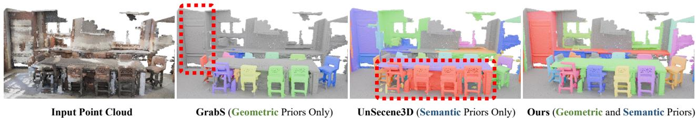

ICML 2026 · P0 · 2026-05-28
FoundObj：它展示了自监督视觉基础模型从“特征提取器”变成“训练信号/奖励函数”的路线，值得通用视觉 SSL 关注
把 foundation model 的表征质量变成可优化的无标注 reward，绕开 scene-level human annotations，适合扩展到长尾和 zero-shot 3D 场景。
编号2605.27178
优先级P0
类别ICML 2026
会议arXiv + ICML 2026
方法构建 superpoint-based object discovery agent，通过语义 reward 与几何 reward 逐步合并邻近 superpoints；reward 来自自监督 2D/3D foundation model 的互补先验。
来源arXiv / OpenReview
先说结论。它展示了自监督视觉基础模型从“特征提取器”变成“训练信号/奖励函数”的路线，值得通用视觉 SSL 关注。 把 foundation model 的表征质量变成可优化的无标注 reward，绕开 scene-level human annotations，适合扩展到长尾和 zero-shot 3D 场景。


核心问题
它展示了自监督视觉基础模型从“特征提取器”变成“训练信号/奖励函数”的路线，值得通用视觉 SSL 关注。
方法拆解
构建 superpoint-based object discovery agent，通过语义 reward 与几何 reward 逐步合并邻近 superpoints；reward 来自自监督 2D/3D foundation model 的互补先验。
主要贡献
把 foundation model 的表征质量变成可优化的无标注 reward，绕开 scene-level human annotations，适合扩展到长尾和 zero-shot 3D 场景。
实验看点
摘要称在多个 3D object segmentation benchmark 上超过既有 label-free baseline，并强调 zero-shot 和 long-tail 泛化。
局限与读法
任务仍是 3D segmentation，不是纯视觉 backbone 预训练；reward 质量会受所选 2D/3D foundation model 偏差影响。